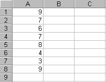
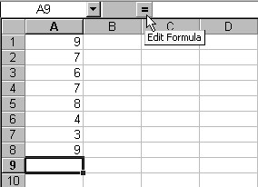
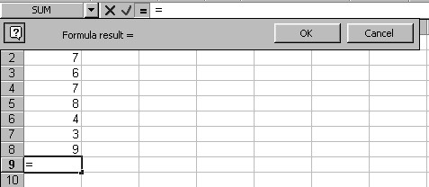
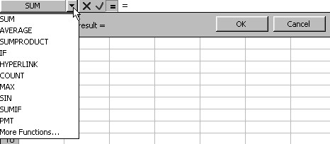
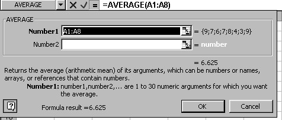
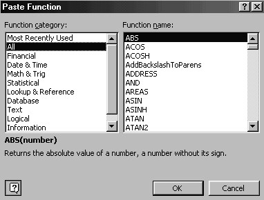
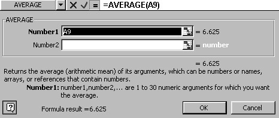

Free
computer Tutorials
|
Free
computer Tutorials
|
|
 HOME
HOME
|
Stay at Home and Learn | |||||
The Average Function in Excel
In section 6, we're going to look at some slightly more complex formulas than the simple operators. In fact the formulas in this section are not really formulas at all. They are Functions. Don't be put off by the name. A Function is just something to help you calculate. You've already met the SUM() function. The ones in this section are just some more of the functions built in to Excel. We will explore averages, date and time formulas, and one or two financial formulas. It might get a bit tricky, so hold on to your hats!
AveragesWe'll make a start with averages. First, what is in an average? In maths, an average is a number derived by dividing how many there are in a list by the list total. For example, suppose a list of student scores in an exam was this: 9, 7, 6, 7, 8, 4, 3, 9. We only have eight scores. To get the average score we first need to get the total. So add up the numbers in the list: 9 + 7 + 6 + 7 + 8 + 4 + 3 + 9 = 53. Next divide by how many there are in the list: 8. So to get the average score the sum is 53 divided by 8. The answer is 6.625. Which means that the average score in the exam was 6.625. Once we have an average figure we can see at a glance which students are performing above average, and which below. Clearly, the poor student who scored only 3 needs some extra homework! So now that you know what an average is, how do you calculate averages
with Excel? Well, start a new spreadsheet and enter those exams scores
in cells A1 to A8. Your spreadsheet will look like the one below: 
There are a couple of ways to insert a function. Method 1 Click on the equals sign next to the formula bar. This is the Edit formula button, and can be seen in the picture below:  When you click the equals button, you'll see a palette appear just under the Name box and Formula bar. It will look like the one below:  There are one or two things to notice about the Formula palette. First look in cell A9. There is an equals sign in it. Excel has entered this because all formulas and functions must start with this symbol, and it knows that it's easy to forget to put an equals sign in. So it does it for you. The next thing to notice is that the Name box says "Sum". There is a black down-pointing arrow to the right of "Sum". Clicking on the arrow will reveal a list of Functions.  The one we want is there. So click on Average with your left mouse button. The palette changes to this rather complicated one:  Excel does a few things here: shows you what Function it is putting in the Formula bar at the top (=Average(A1:A8); gives you a list of the values in your cells (in brackets after the Number1 text area); gives you the result (at the bottom "Formula result = "). But don't worry if you're scratching your head over that dialogue box. Just click the OK button at the bottom. The palette closes, and Excel inserts the result of the average in cell A9.
Method 2 The second way to enter a Function is this:
 This dialogue box is a listing of all the Functions built in to Excel. The Average function is under Statistical.
But what if Excel has the wrong cell references for your Average? Is there any way you can edit the Functions? Yes, there is. Try this: Click in cell B9 of your spreadsheet. Use one of the methods outlined to bring up the formula palette. Your spreadsheet will now look like this:  This time the formula bar just reads =Average(A9). You can edit the function by clicking inside the formula bar at the top. Change A9 to A1:A8 and the click the OK button. Of course, you don't need to use the formula palette at all. You could just enter the Function directly, just like you did with the Sum() function, or any other formula: click on the cell where you want the answer to appear. Then click inside the formula bar. Enter =Average(A1:A9) and press the return key on your keyboard. The advantage of using the formula palette is that Excel enters the correct function for you. It's very easy to make a typing error if you do it yourself, and then get an enigmatic error message for your troubles. OK, time for an exercise.
Exercise
|
||||||
|